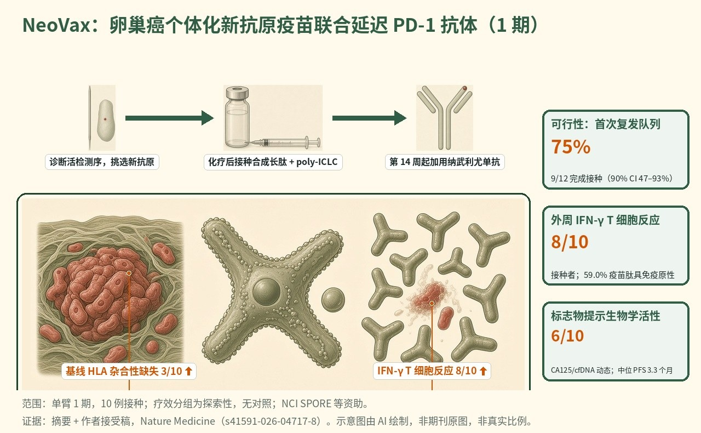

卵巢癌个体化新抗原疫苗1期：可行，逃逸指向抗原呈递
NeoVax 1 期单臂试验在铂敏感高级别上皮性卵巢癌标准铂类化疗后，接种按患者肿瘤突变定制的合成长肽疫苗（联合 poly-ICLC），并在第 14 周起加用纳武利尤单抗。首次复发队列可评估患者中 9/12（75%）完成接种，初治队列仅 1/9（11%）；未见意外安全信号，无人因毒性停药。10 例接种者中 8 例出现疫苗肽特异性 IFN-γ T 细胞反应，6 例血清 CA125/cfDNA 动态提示生物学活性；进展与 HLA 杂合性缺失、JAK1 结构变异和疫苗靶突变丢失等抗原呈递相关机制有关。

- 诊断活检测序，为每位患者挑选新抗原
- 标准铂类化疗后接种合成长肽 + poly-ICLC
- 第 14 周起加用 PD-1 抗体纳武利尤单抗
- 应答广度与肿瘤的抗原呈递能力共同决定获益
示意图概括了 NeoVax 的个体化设计、与标准化疗和延迟 PD-1 阻断的衔接，以及论文提出的“诱导免疫广度—肿瘤抗原呈递”平衡。
研究背景与待解问题
高级别上皮性卵巢癌对免疫检查点抑制剂总体获益有限，一个常被提到的原因是肿瘤突变负荷低、T 细胞启动不足。个体化新抗原疫苗在黑色素瘤等高突变肿瘤中已有随机试验信号，在胰腺癌、胶质母细胞瘤、肾癌等低突变肿瘤中也有小型试验提示活性。
本研究要回答的问题是：在卵巢癌的标准治疗流程中嵌入个体化新抗原疫苗是否可行、安全；疫苗诱导的免疫应答与临床走势有何关联；肿瘤又通过哪些机制逃逸。
研究设计
入组铂敏感高级别上皮性卵巢癌患者，分为初治队列（A，ⅢC/Ⅳ期，3 个周期化疗后行间歇性减瘤术）与首次铂敏感复发队列（B）。所有患者在标准化疗前做诊断活检，用于全外显子与 RNA 测序、预测与患者 HLA 结合的新表位并合成疫苗。
接种者肿瘤中位含 103 个错义突变（范围 51–150），对应中位肿瘤突变负荷 2.8，其中中位 86.5 个突变编码预测可与患者 HLA 结合的新表位。标准化疗结束后接种 NeoVax，第 14 周起加用纳武利尤单抗。从设计疫苗的活检到首次接种中位间隔 6.5 个月（范围 6.0–7.6）。
核心结果
可行性与安全性
队列 B 中 9/12 例（75%）完成接种，达到预设可行性标准；队列 A 仅 1/9 例（11%）。队列 A 入组困难主要源于粗针活检组织不足以及一线维持治疗监管环境变化。未见意外的治疗相关不良事件，无患者因毒性停药。
疫苗靶点在化疗后是否仍然存在
用个体化 cfDNA 检测追踪疫苗靶向的单核苷酸突变：10 例中 7 例在初免时可检出超过一半的靶突变，第 8 例在末次加强前可检出；总体分别有 56.5%（初免时）和 73.1%（至末次加强）的靶突变可检出，说明间隔半年的化疗后疫苗靶点大多仍与肿瘤相关。
生物标志物分组与免疫应答
接种后中位无进展生存期为 3.3 个月（范围 1 个月至未达到），个体差异很大。按血清 CA125 与 cfDNA 动态，研究者将 10 例分为三组：进展者 4 例、短暂控制者 3 例、持续控制者 3 例。持续控制的 3 例在接种前已处于标准化疗后的完全缓解（2 例）或部分缓解（1 例）状态，接种期间 CA125 持续低水平，但 cfDNA 出现起伏；其中 1 例 cfDNA 在第 140 天达峰后降至检测限以下，至数据截止（第 650 天）仍无病。
10 例中 8 例检出针对至少一个疫苗肽池的体外 IFN-γ 反应，多在第 12 周加强后达峰；144 条疫苗肽中 85 条（59.0%）具免疫原性，每例中位 7 条免疫原性肽、对应中位 7 个突变。6 例短暂或持续控制者的疫苗诱导应答覆盖的靶突变多于 4 例进展者（平均 9.3 对 5.5 个，P = 0.029）。
免疫逃逸机制
1 例进展者的接种后肿瘤出现 JAK1 结构变异；在患者来源类器官中，该变异导致 STAT1 磷酸化和 HLA-I 表达受损，回补 JAK1 后可恢复。3/10 例接种者的基线活检存在 6 号染色体 HLA 区域杂合性缺失（含 2/4 例进展者），其中 2 例丢失覆盖 HLA-A、B、C 的整条单倍型，部分最优预测表位因此失去呈递分子。2 例短暂控制者的复发活检中分别有 3/15 和 6/14 个疫苗靶突变丢失，提示免疫编辑。
机制解读
论文所证实的： 在卵巢癌标准治疗后序贯接种个体化新抗原疫苗并联合延迟 PD-1 阻断，在首次复发人群中可行且耐受良好；疫苗能在多数接种者中诱导多克隆 T 细胞反应；进展病例中可找到抗原呈递相关的逃逸证据。
需要进一步验证的： 生物标志物定义的“控制”是否代表真正的临床获益，疫苗与纳武利尤单抗各自的贡献，以及在设计新抗原时纳入 HLA 杂合性缺失和抗原呈递状态能否改善疗效，需要更大规模、有对照的试验检验。
局限与不确定
- 单臂 1 期，接种者仅 10 例，铂敏感程度异质，无法对疗效下确定结论。
- 临床分组基于 CA125 与 cfDNA 的事后分析，并非 RECIST 客观缓解率等标准疗效终点；未报告总生存期。
- 疫苗与纳武利尤单抗联合使用，部分患者同时接受标准 PARP 抑制剂维持治疗，难以区分各自作用。
- 初治队列入组困难，结论主要来自首次复发患者。
- 本文依据期刊摘要与作者接受稿，出版社终版的个别数字可能有细微差异。
临床/产业意义
对个体化肿瘤疫苗领域，这项研究的价值更多在“为什么不起效”：在低突变的卵巢癌中，可用的新抗原本来就少，而约三成肿瘤存在 HLA 等位基因特异性缺失，一部分最优靶点从一开始就无法被呈递。作者据此主张在抗原选择时纳入 HLA 杂合性缺失与抗原呈递状态；第一作者在 ACIR 访谈中还提到，应拓展结构变异、内源性逆转录病毒等非经典新抗原来源。对 mRNA 或多肽个体化疫苗的开发方而言，这提示低突变瘤种的试验设计需要把抗原呈递评估前置。